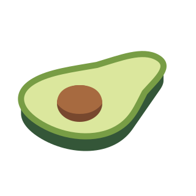

<!doctype html>
<meta charset="utf-8">
<title>Croissant mascot study</title>
<style>
  * { box-sizing: border-box; }
  html, body { margin: 0; background: #0B0B0C; color: #8E8A87; font: 13px system-ui; }
  main { width: 900px; height: 540px; display: grid; grid-template-columns: 540px 360px; }
  .hero { display: grid; place-items: center; }
  .hero img { width: 400px; height: 400px; }
  .sizes { border-left: 1px solid #242426; display: flex; flex-direction: column; align-items: center; justify-content: center; gap: 44px; }
  figure { margin: 0; display: flex; flex-direction: column; align-items: center; gap: 12px; }
  img { display: block; }
</style>
<main>
  <div class="hero"></div>
  <div class="sizes">
    <figure><figcaption>128 px</figcaption></figure>
    <figure><figcaption>64 px</figcaption></figure>
  </div>
</main>
